us_test_001.jpg
Test · 1 detections · 66.7 ms
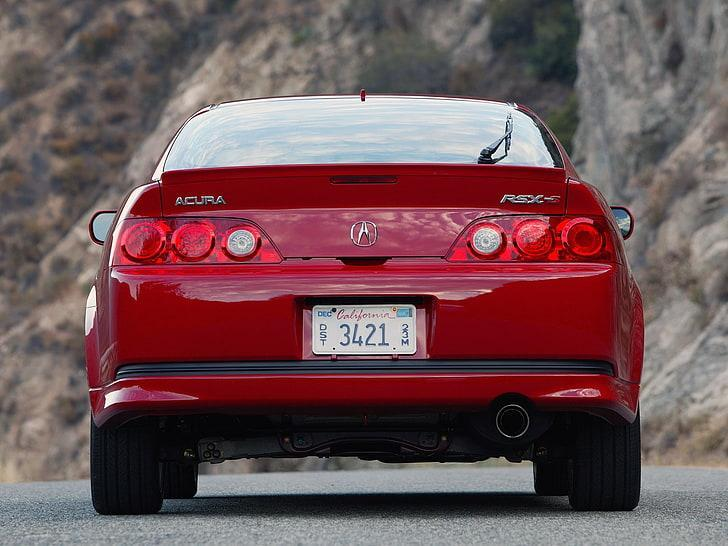
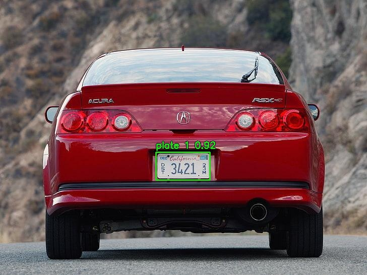
Detection & crop preview
20 images · 20 with detections · 24 plate candidates
yolo-v9-t-384-pretrained.pt · CPU · Confidence threshold 0.25. Click any image to view full size. Crops come from the original image. Prediction counts and confidence scores are not accuracy measurements.
Test · 1 detections · 66.7 ms


Test · 1 detections · 69.3 ms
Test · 1 detections · 87.4 ms
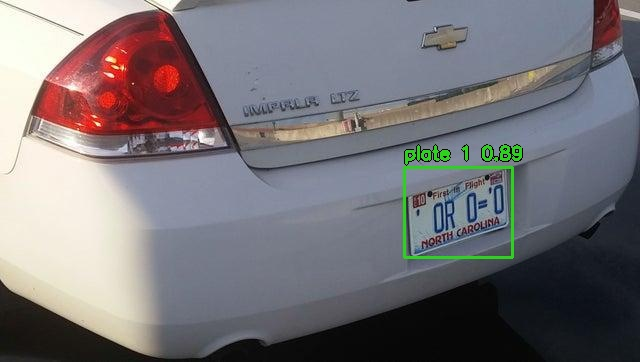
Test · 1 detections · 134.7 ms
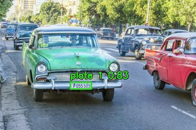
Test · 1 detections · 136.6 ms
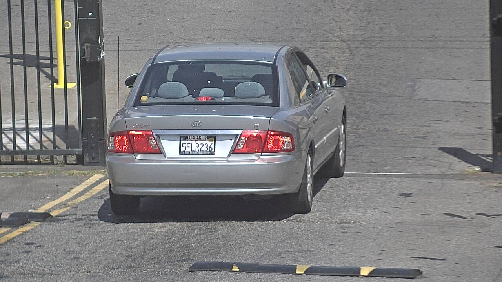
Test · 2 detections · 115.9 ms
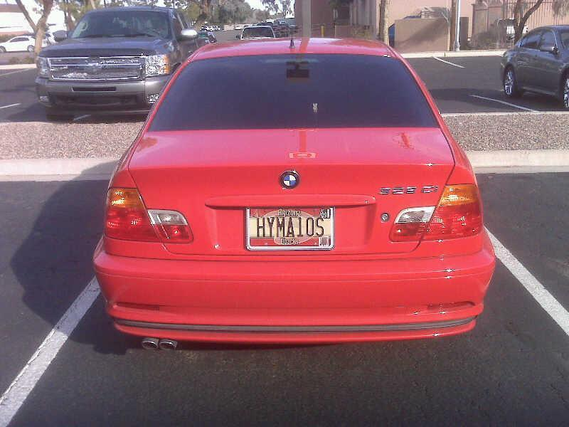
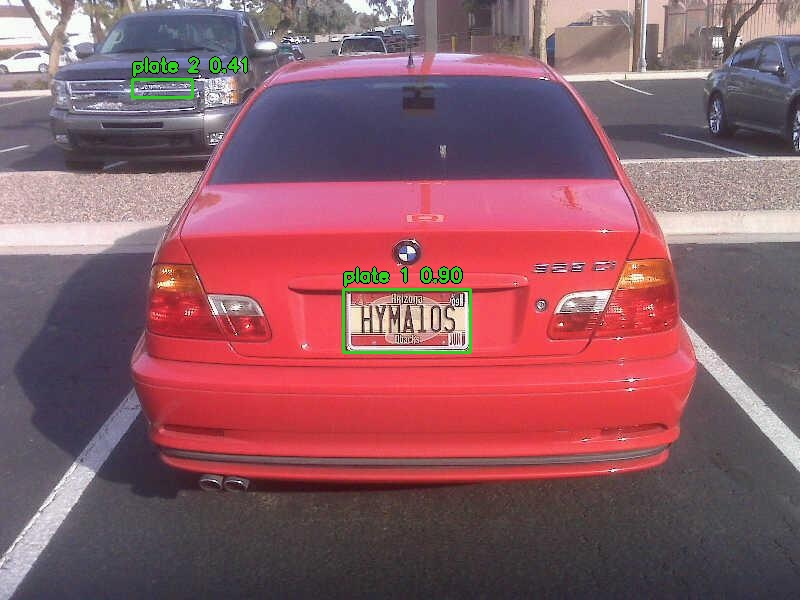
Test · 1 detections · 121.8 ms
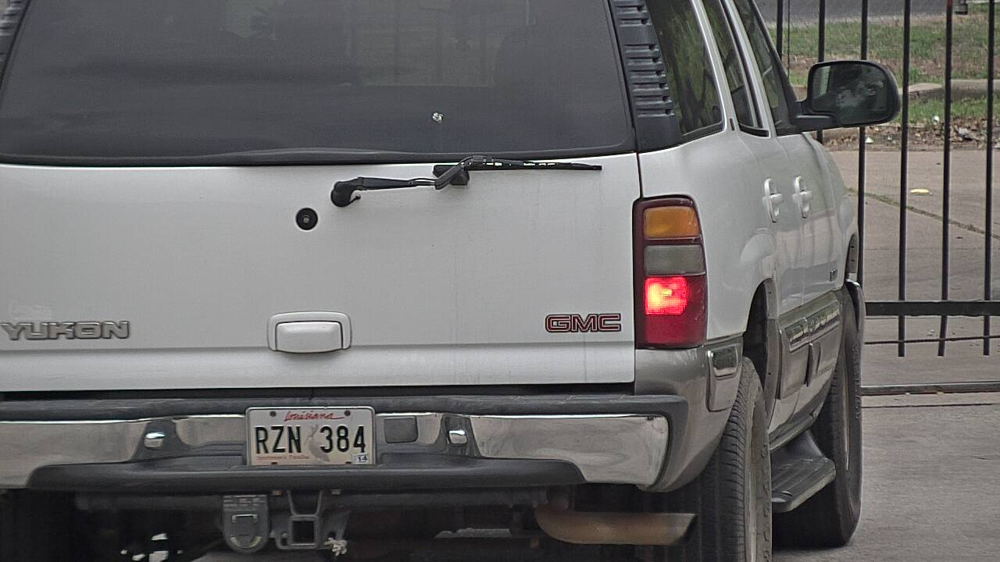
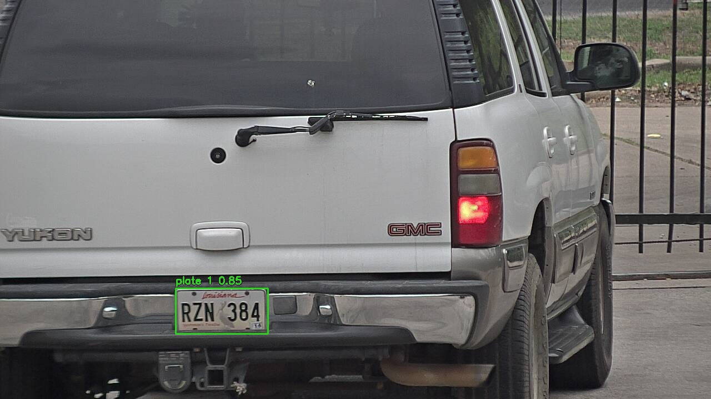
Test · 1 detections · 91.6 ms
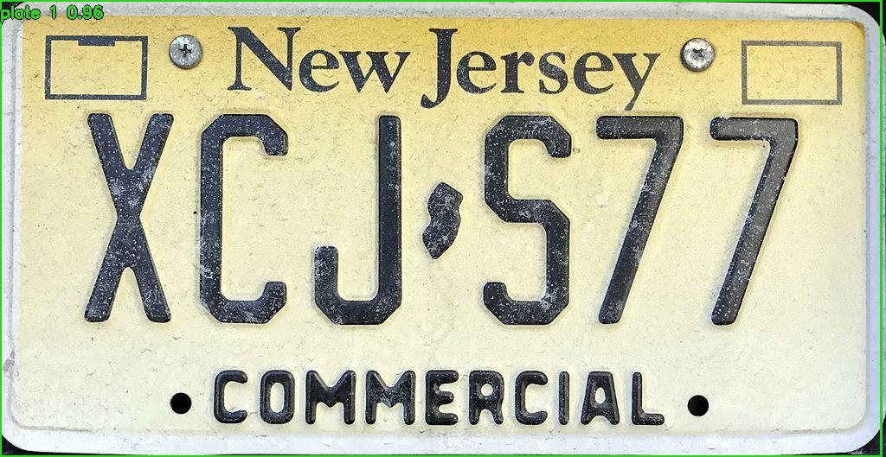
Test · 1 detections · 110.1 ms
Test · 1 detections · 99.4 ms
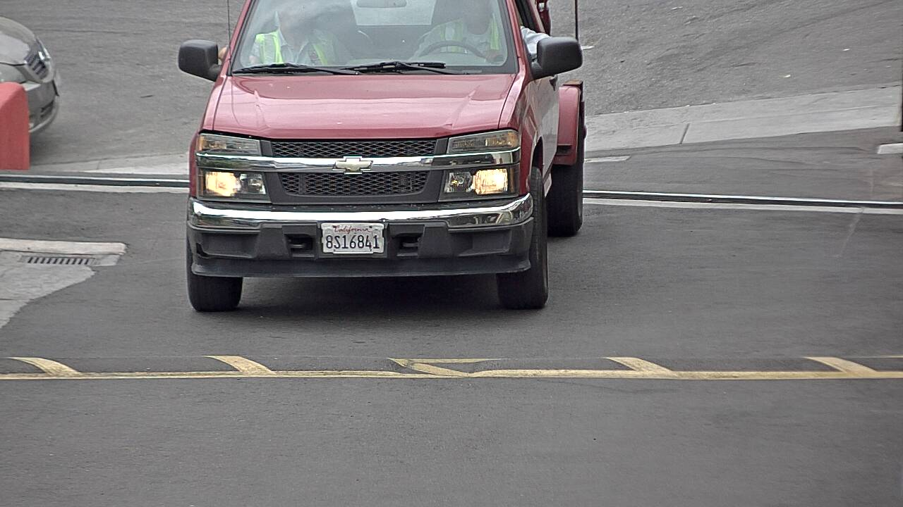
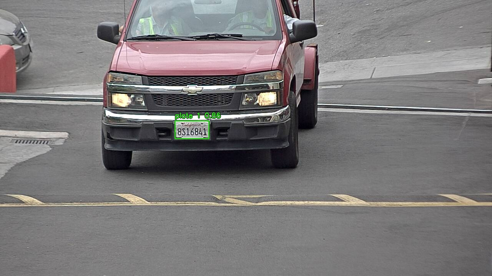
Test · 1 detections · 105.0 ms
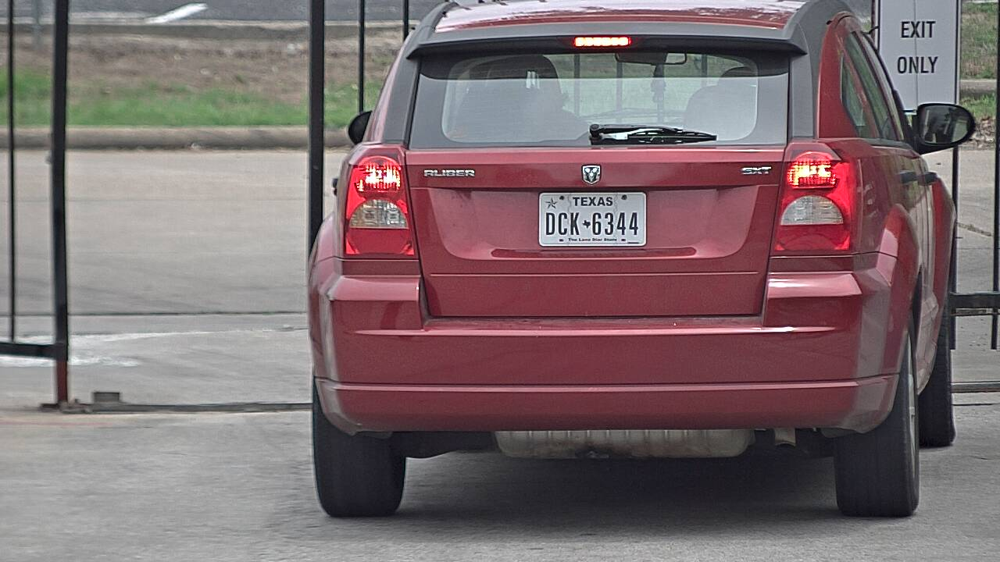
Test · 1 detections · 103.4 ms
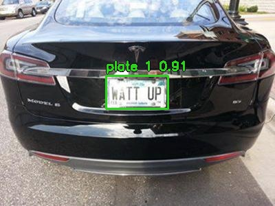
Test · 1 detections · 147.4 ms
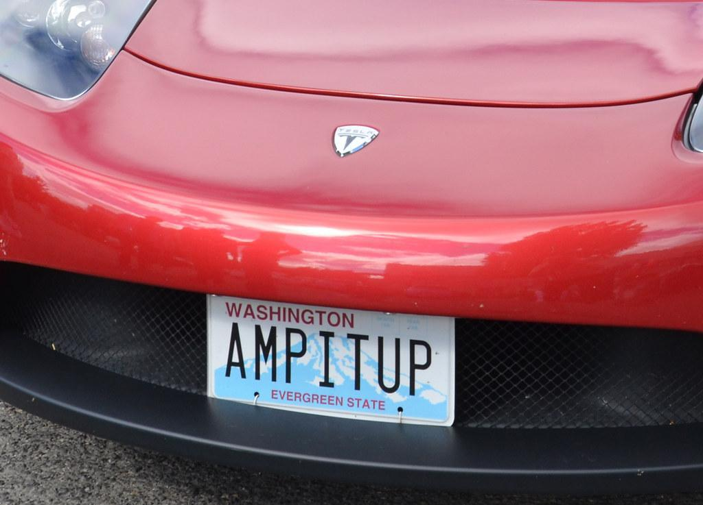
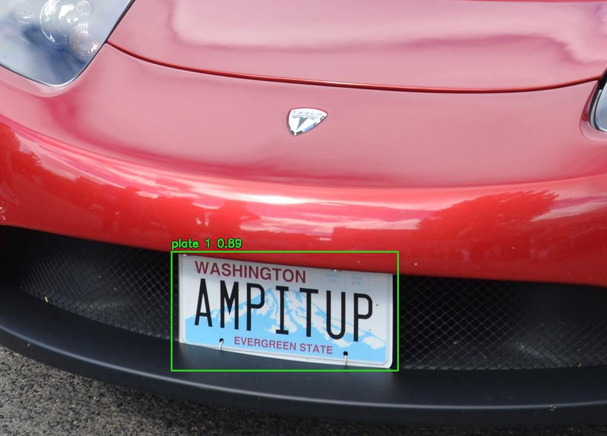
Test · 1 detections · 90.1 ms
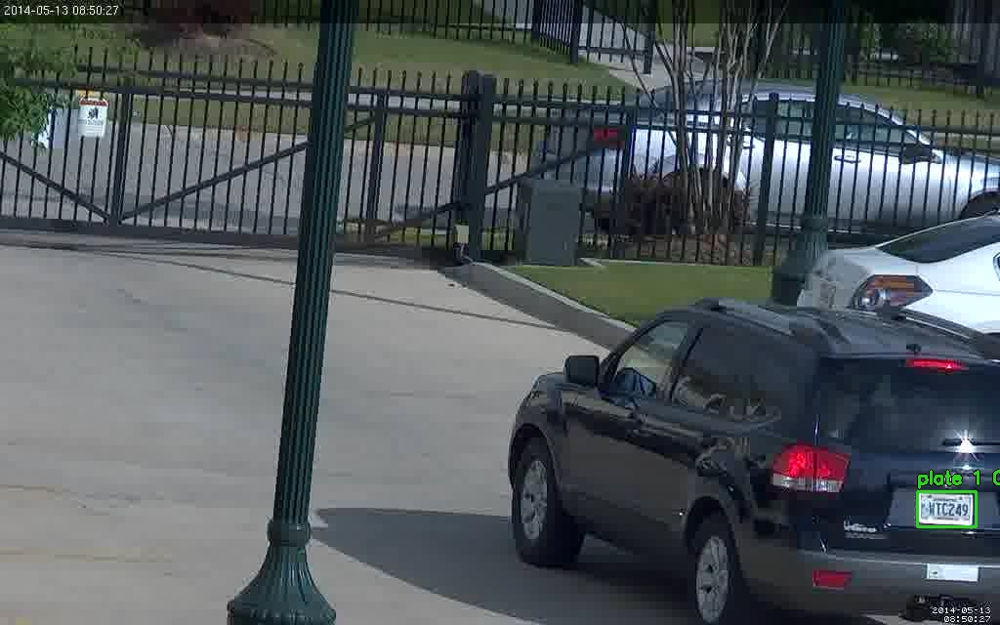
Test · 2 detections · 75.6 ms
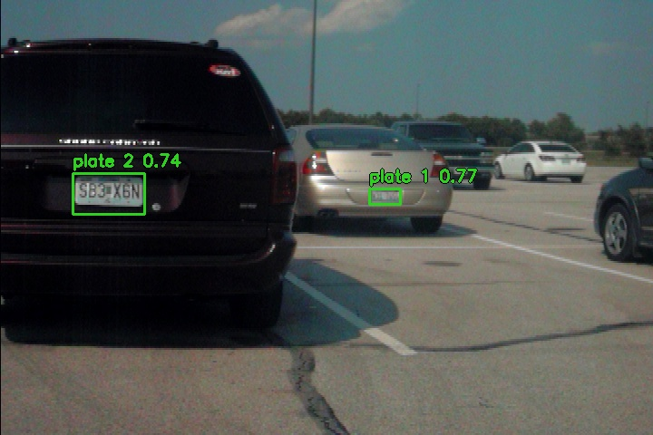
Test · 1 detections · 71.6 ms
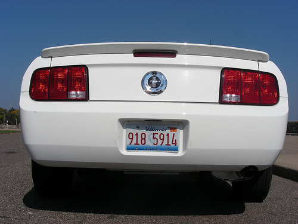
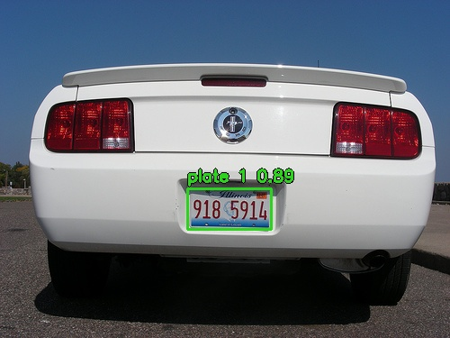
Test · 1 detections · 78.3 ms
Test · 1 detections · 67.9 ms
Test · 2 detections · 73.4 ms
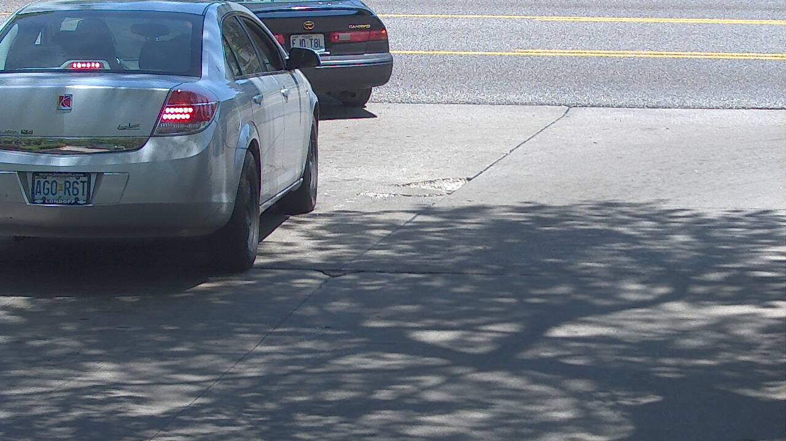
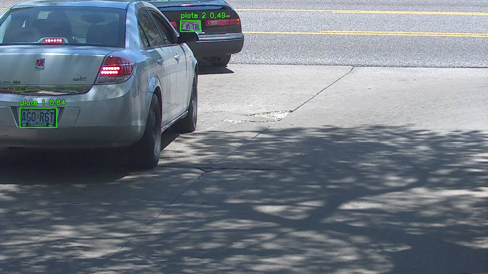
Test · 2 detections · 83.2 ms
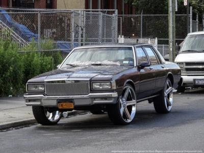
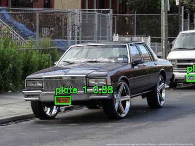